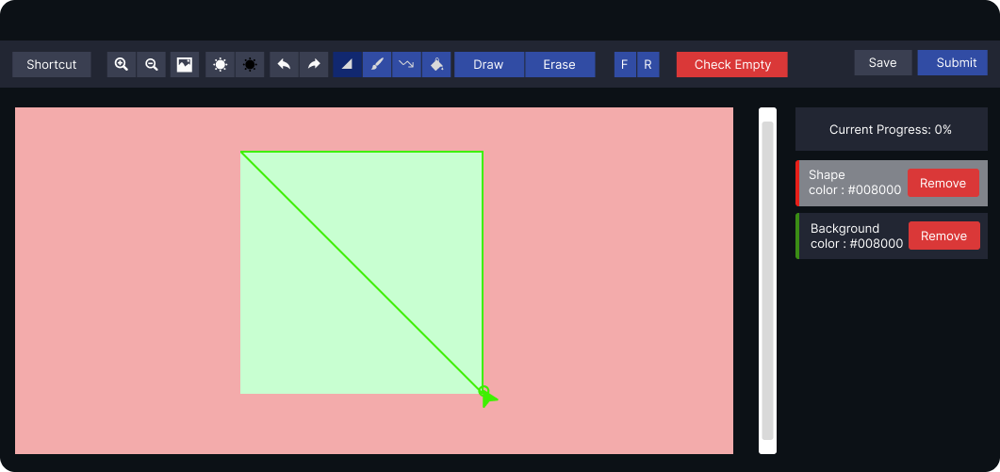
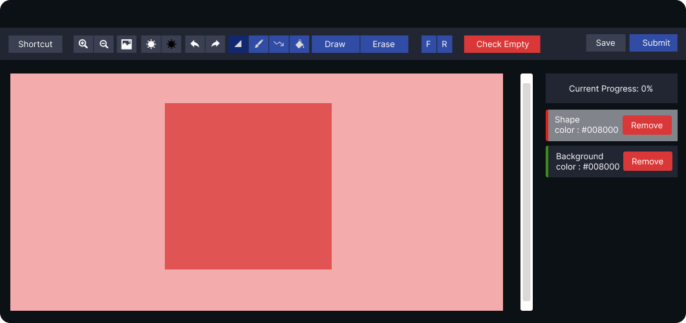
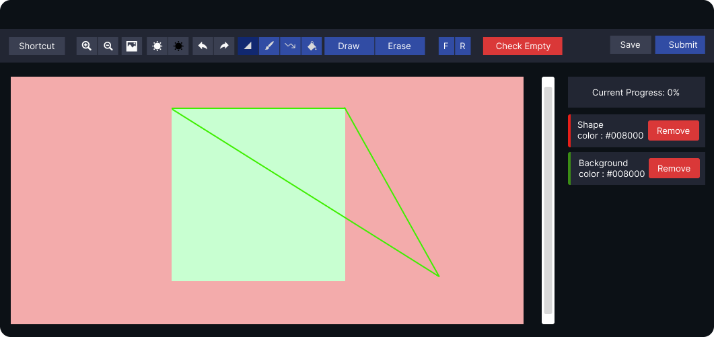
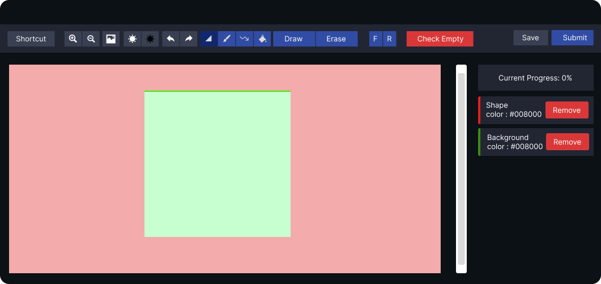
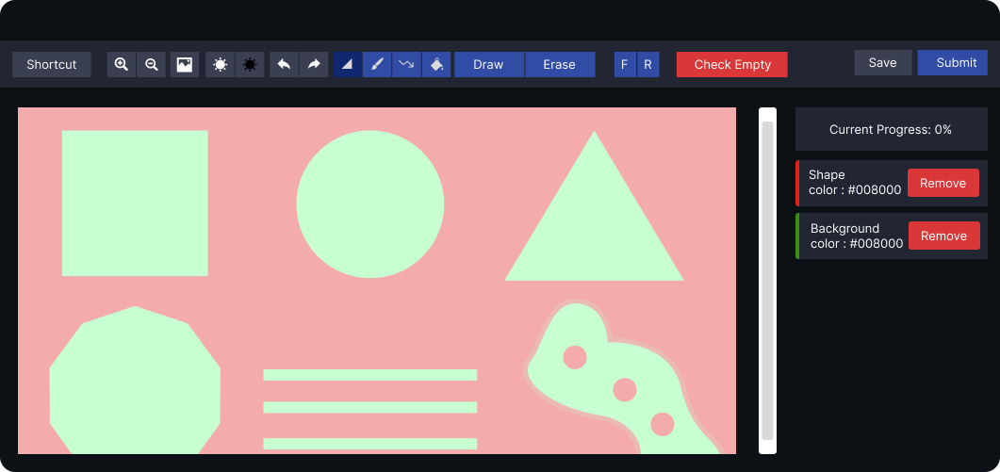
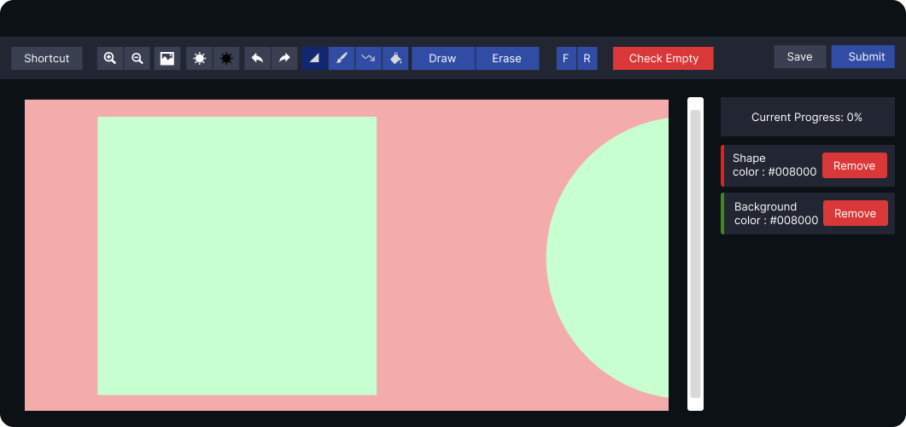

Polygon Drawing Test Instructions
This is your third and final test. In this test, you will use the polygon tool to draw shapes, which is commonly used in image segmentation for artificial intelligence.
Drawing Shapes:
- Click to Create Points: Use the polygon tool to draw shapes by clicking on the edges of the shape. For example, a square has four edges, so you will click on the four corners of the square to create the shape.

- Fill the Shape: Once you have clicked on all the edges of the shape, press the "Enter" key on your keyboard to fill the shape with the color red.

- Simple Completion: It's that simple! Just click on the edges of the shape and press "Enter" to complete the shape with a red fill.
Other Functions of the Tool:
- Delete a Point: If you make a mistake or your line is crooked, use the "Backspace" key on your keyboard to delete a point. This will take you to the previous point, helping you correct your line.


- Delete a Shape: If your shape is already filled with the red color, pressing "Backspace" will not undo the shape. Instead, use the "Undo" button or the keyboard shortcut "Ctrl + Z" to delete the entire shape.
- Zoom In and Out: To adjust the image size for better precision, use the zoom in and out buttons in the tool menu. Alternatively, you can use the keyboard shortcuts "+" and "-" after "0" to zoom in or out.


Important Note:
You are required to label only the square, the triangle, and the three rectangular shapes in this test.
Once you have completed the test, inform the instructor before you leave.
We wish you the best of luck in completing the test! If you have any questions, feel free to ask the instructor.
Please remember to close the tab after you have finished with the test to return to this page
Start Test 3